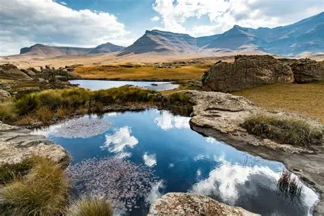

Discover the Kingdom in the Sky
Explore the rich history, dramatic geology, and proud cultural heritage of Lesotho.
Welcome to Lesotho
Lesotho is an enchanting mountainous kingdom in Southern Africa, completely surrounded by South Africa. Renowned across the globe as The Kingdom in the Sky, it is the only independent state in the world that lies entirely above 1,000 meters in altitude.
Founded in the early 19th century under the wise leadership of King Moshoeshoe I, Lesotho preserves a distinctive and resilient national identity. Traditional life coexists harmoniously with eco-tourism, mountain conservation, and warm community hospitality.
Whether you seek peaceful alpine solitude, the exhilaration of high-altitude pony trekking, or the wonder of crystal-clear waterfalls tumbling into deep basalt gorges, Lesotho promises memories that will stay with you forever.

What Makes Lesotho Special?
Three defining pillars that make a journey through Lesotho unlike anywhere else on Earth.
Dramatic Mountains
Home to the Maluti and Drakensberg mountain ranges, featuring peaks exceeding 3,400 meters, snowy winter slopes at AfriSki, and deep emerald river valleys.
Vibrant Culture
Experience authentic Basotho culture — from the iconic cone-shaped Mokorotlo hat to intricately woven Basotho blankets, storytelling, and local village life.
Alpine Adventures
Trek along centuries-old bridle paths on hardy Basotho ponies, navigate the thrilling 4x4 hairpins of Sani Pass, or abseil down the world-record Maletsunyane Falls.
Fast Facts About Lesotho
Key information every traveller should know
Highest lowest point of any sovereign nation on Earth.
The Kingdom's vibrant hub and official commercial center.
Highland dams provide crystal-clear water and hydroelectric power.
Sesotho and English are official languages widely spoken.